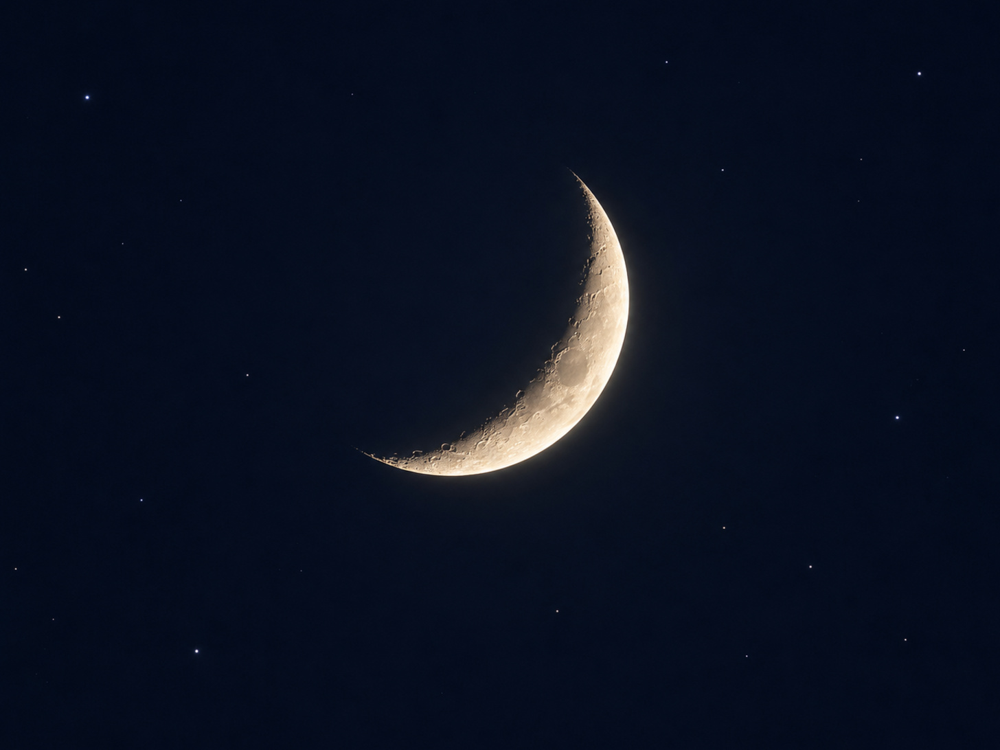
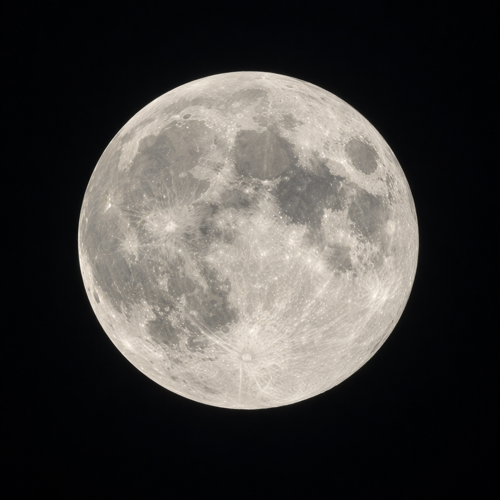

أطوارُ القمر — ألوّنها
وحدة الليل والنهار · علّمني ربي — القمر · ركن فنوني الجميلة
اسم الطفل/ة: …………………………
التاريخ: ………………
طريقة العمل: يلوّنُ الطفلُ الجزءَ المضيءَ من القمر في كلِّ دائرة (أبيض · فضّيّ · ذهبيّ) تابعًا الأسهم من الهلال إلى البدر. نختم: يتغيّرُ شكلُ القمر بأمر الله منازلَ نعرفُ بها الشهورَ والمواقيت ﴿وَالْقَمَرَ قَدَّرْنَاهُ مَنَازِلَ﴾.
هِلال
تَربيع
أحدَب
بَدر

هكذا الهلال في السماء

وهكذا البدر
دليل معلمة غرس القيم · تلوينُ أطوار القمر — ركن فنوني الجميلة